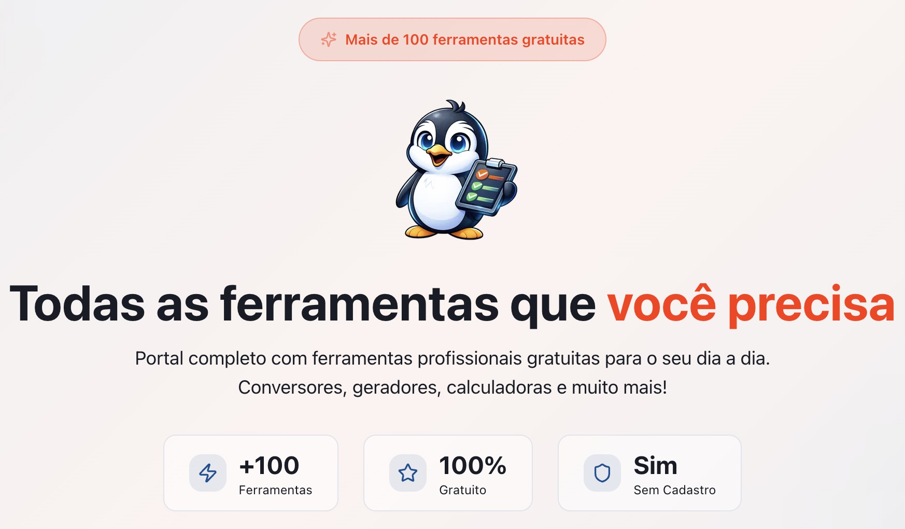

Pingo Utilitários
Resolve a vida
“Esse aqui foi amor à primeira ferramenta.”
O Pingo Utilitários reúne um tanto de recursos gratuitos em um único lugar: calculadoras, conversores, ferramentas para textos, imagens, PDFs, consultas e várias outras coisinhas que normalmente fariam a gente abrir dez sites diferentes.
E o melhor: é gratuito e não precisa de cadastro.
Eu fiquei sinceramente assim: como eu nunca tinha encontrado isso antes?
Amo quando um único site consegue resolver mil coisas, principalmente aquelas tarefas pequenas e chatas que aparecem no meio do trabalho e interrompem tudo.
Já foi direto para os meus favoritos.
↗ Visitar o site